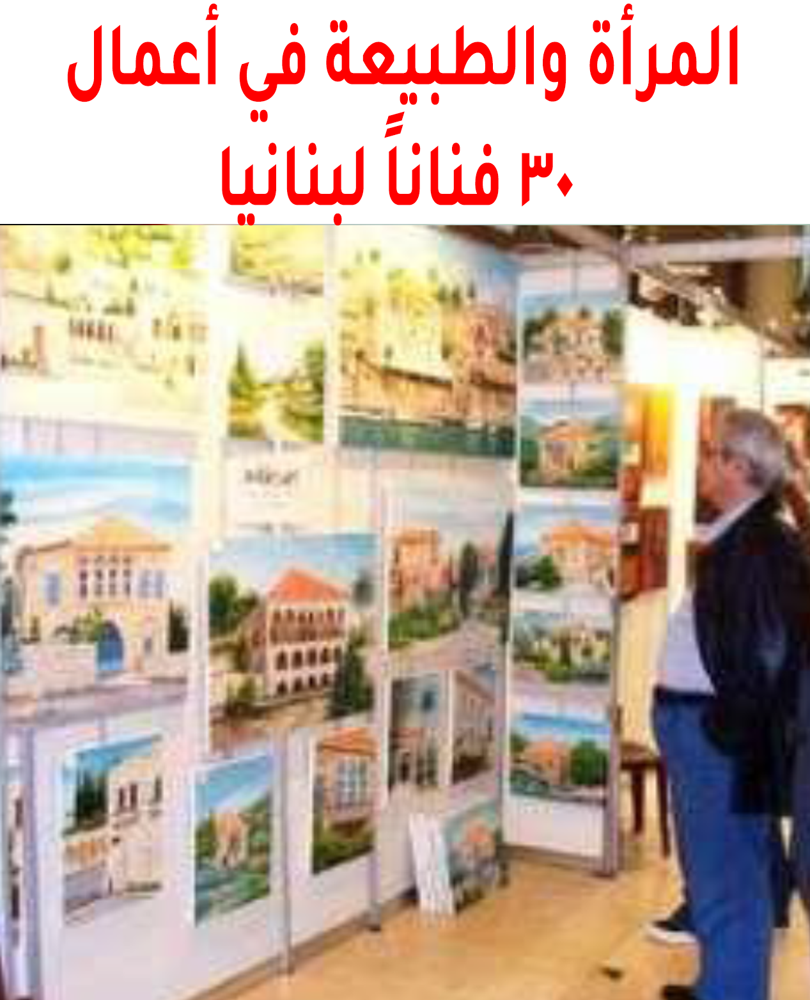
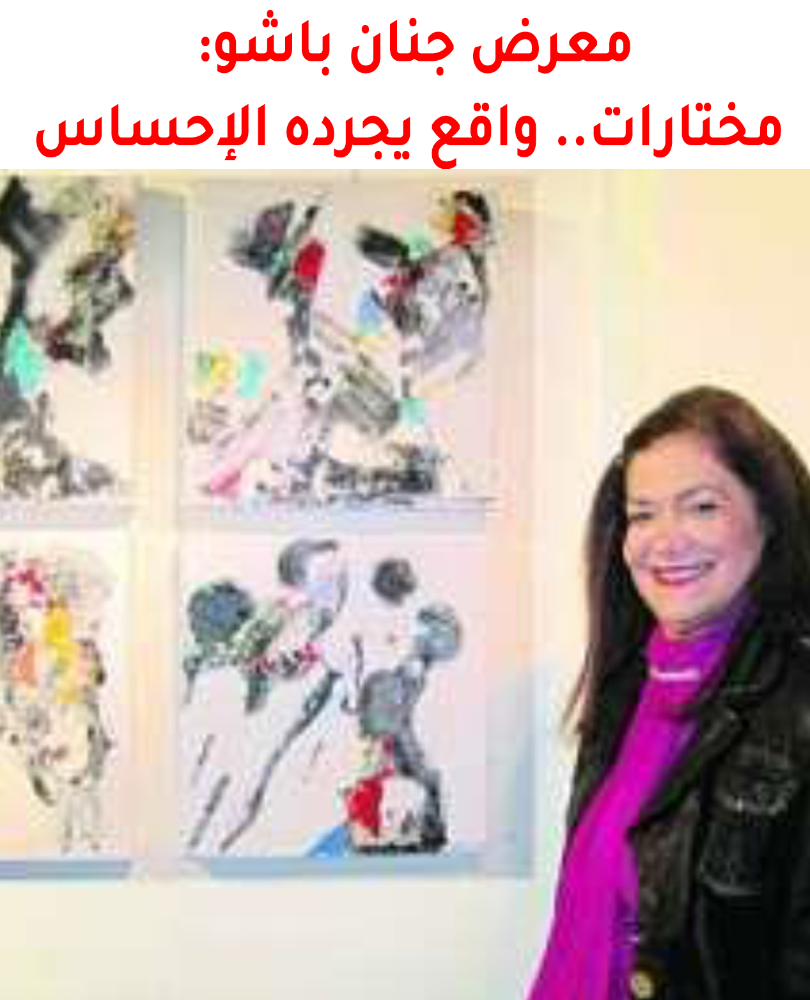

01 / PHOTOGRAPHY
Behind the frame
Portraits, production moments and candid photographs from creative environments and public events.
Explore photographs ↗A seasoned storyteller with a sharp eye for truth and creativity. Through journalism and visual storytelling, I bring meaningful stories to life — informing, inspiring and connecting audiences.

My work sits at the intersection of journalism, filmmaking and creative direction. I am drawn to stories that reveal character, capture a moment and give audiences a reason to care.
From interviews and reporting to documentary work, advertising films and video editing, I take projects from the first idea through to the final frame — with care for both the message and the craft.
A selection from filming and editing projects. Watch the work and explore the full video collection.
A collection of visual projects, conversations and stories gathered across years of work in media.
Portraits, production moments and candid photographs from creative environments and public events.
Explore photographs ↗
Press interviews and conversations with artists, public figures and influential voices.
Browse interviews ↗
Editorial features, reports and visual projects documenting people, culture and ideas.
Explore reports ↗
Journalism is at the heart of my approach to storytelling. I value curiosity, accuracy and the human detail behind every headline. My archive brings together press interviews, reports and visual stories from a wide range of voices and subjects.
I am a journalist and film director with a deep passion for storytelling, truth and visual impact. My experience spans investigative journalism, reporting, interviews and media production — from human-interest stories to creative documentary filmmaking.
As a director, I conceptualize and produce visual content including advertising films, short features and branded storytelling. I manage projects from script to screen, and bring strong video-editing skills to the final story — shaping image, sound and pacing to create clarity and emotional connection.
Read my CV ↗Have a project, story, collaboration or media enquiry? Feel free to get in touch.